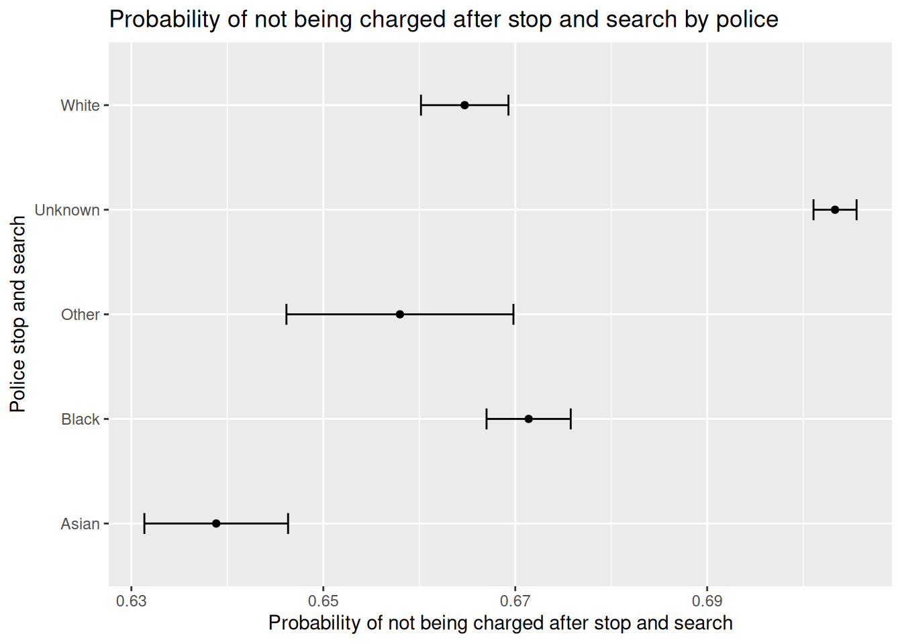

This notebook demonstrates how to import and clean administrative and government data in R.
# install libraries if not already available need <-c("tidyverse","stargazer") # list packages neededhave <- need %in%rownames(installed.packages()) # checks packages you haveif(any(!have)) install.packages(need[!have]) # install missing packagesinvisible(lapply(need, library, character.only=T)) # load needed packages
── Attaching core tidyverse packages ──────────────────────── tidyverse 2.0.0 ──
✔ dplyr 1.1.4 ✔ readr 2.1.5
✔ forcats 1.0.0 ✔ stringr 1.5.1
✔ ggplot2 3.5.1 ✔ tibble 3.2.1
✔ lubridate 1.9.3 ✔ tidyr 1.3.1
✔ purrr 1.0.2
── Conflicts ────────────────────────────────────────── tidyverse_conflicts() ──
✖ dplyr::filter() masks stats::filter()
✖ dplyr::lag() masks stats::lag()
ℹ Use the conflicted package (<http://conflicted.r-lib.org/>) to force all conflicts to become errors
Please cite as:
Hlavac, Marek (2022). stargazer: Well-Formatted Regression and Summary Statistics Tables.
R package version 5.2.3. https://CRAN.R-project.org/package=stargazer
# some more setup: setting up paths and folder structure if it does not yet existtable_dir <-"./output/tables/"figure_dir <-"./output/figures/"data_folder <-"./data/raw/"dir.create('./output')
Warning in dir.create("./output"): './output' already exists
dir.create(table_dir)
Warning in dir.create(table_dir): './output/tables' already exists
dir.create(figure_dir)
Warning in dir.create(figure_dir): './output/figures' already exists
dir.create("./data/processed") # for the processed data we might make later
Warning in dir.create("./data/processed"): './data/processed' already exists
We can do this two different ways. The easiest way is to simply read the data directly from the web. This method, however, would leave you at the mercy of the website maintainer who could change the data or prevent access. For replicability, the best practice is to download the raw data and save it in a data folder, which can then be used later. Another option is to read the data from the web, but save it to a local file.
# read in the data from the web#df <- read.csv('https://data.london.gov.uk/download/mps-stop-and-search-public-dashboard-data/25f8428d-924d-472f-96b4-b91a8a5c9fa3/Stops_LDS_Extract_24Months.csv')# make a data directory if it doesn't exist#dir.create('data')# save the data to a local file#write.csv(df, 'data/stop_search.csv')#head(df)
Print the column names
df <-read.csv('data/stop_search.csv')# let's get the distribution of crimes using the `Reason.for.Stop` column colnames(df)
Let’s get the distribution of crimes using the Reason.for.Stop column
# let's get the distribution of crimes using the `Reason.for.Stop` columndf %>%group_by(Reason.for.Stop) %>%summarise(n =n()) %>%arrange(desc(n)) %>%head(15)
# A tibble: 15 × 2
Reason.for.Stop n
<chr> <int>
1 Drugs (s.23 Drugs Misuse Act) 85933
2 Stolen Property (s.1 PACE) 52027
3 Weapons, Point & Blades (s.1 PACE, s.139 CJ Act) 44348
4 Cannabis (s.23 Drugs Misuse Act) 37470
5 Going Equipped (s.1 PACE) 11207
6 Drugs Other (s.23 Drugs Misuse Act) 10978
7 Cocaine (s.23 Drugs Misuse Act) 7653
8 Heroin (s.23 Drugs Misuse Act) 4348
9 s.60 CJPO Weapons 2800
10 Nitros Oxide (s.23 Drugs Misuse Act) 2774
11 Firearms (s.47 Firearms Act) 1641
12 Psychoactive Substances 1536
13 Articles to Cause Criminal Damage (s.1 PACE) 1397
14 Fireworks (s.1 PACE) 1130
15 Other Object (see Annex A of code A PACE) 533
Let’s get the distribution of ethnicity
# let's get the distribution of race using the 'Ethnic.Appearance' columndf %>%group_by(Ethnic.Appearance) %>%summarise(n =n()) %>%arrange(desc(n))
# A tibble: 8 × 2
Ethnic.Appearance n
<chr> <int>
1 "" 156010
2 "Black" 44071
3 "White - North European" 31794
4 "Asian" 15243
5 "White - South European" 9406
6 "Arabic Or North African" 6181
7 "Unknown" 3142
8 "Chinese, Japanese, Or Any Other South East Asian" 570
# hmmm do we notice anything here?
Are there racial differences in whether people who are stopped are charged?
Let’s get the probability of being targeted for a stop and search and not being arrested, conditional on race
\[P(\text{not arrested} | \text{stop and search}) = \frac{P(\text{not arrested and stop and search})}{P(\text{stop and search})}\]
# let's get the probability of being targeted for a stop and search *and not being arrested*, conditional on race # create dummy variable for being arrested and not charged df$no_charge <-ifelse(df$Outcome =='No Further Action', 1, 0)# convert race into a factordf$race_factor <-as.factor(df$Ethnic.Appearance.Group)# estimate a logistic regression modelmodel <-glm(no_charge ~ race_factor, data = df, family = binomial)summary(model)
Call:
glm(formula = no_charge ~ race_factor, family = binomial, data = df)
Coefficients:
Estimate Std. Error z value Pr(>|z|)
(Intercept) 0.57034 0.01656 34.450 < 2e-16 ***
race_factorBlack 0.14416 0.01941 7.425 1.13e-13 ***
race_factorOther 0.08398 0.03151 2.665 0.0077 **
race_factorUnknown 0.29283 0.01744 16.789 < 2e-16 ***
race_factorWhite 0.11412 0.01957 5.831 5.50e-09 ***
---
Signif. codes: 0 '***' 0.001 '**' 0.01 '*' 0.05 '.' 0.1 ' ' 1
(Dispersion parameter for binomial family taken to be 1)
Null deviance: 331065 on 266416 degrees of freedom
Residual deviance: 330532 on 266412 degrees of freedom
AIC: 330542
Number of Fisher Scoring iterations: 4
Predict probabilities for each racial group
# Predict probabilities for each racial groupdf$predicted_prob <-predict(model, type ="response")# Calculate average probability by raceprob_by_race <- df %>%group_by(race_factor) %>%summarise(mean_prob =mean(predicted_prob))print(prob_by_race)
# A tibble: 5 × 2
race_factor mean_prob
<fct> <dbl>
1 Asian 0.639
2 Black 0.671
3 Other 0.658
4 Unknown 0.703
5 White 0.665
Are the differences statistically significant?
# Are the differences 'significant' at a pvalue of 0.05?# Get predicted probabilities & confidence intervals from the logistic modelpreds <-predict(model, type ="response", se.fit =TRUE)# Add predictions to the datasetdf$predicted_prob <- preds$fitdf$lower_ci <- preds$fit -1.96* preds$se.fit # 95% lower CIdf$upper_ci <- preds$fit +1.96* preds$se.fit # 95% upper CI# Aggregate by race to get average predicted probability & confidence intervalsplot_data <- df %>%group_by(race_factor) %>%summarise(mean_prob =mean(predicted_prob),lower_ci =mean(lower_ci),upper_ci =mean(upper_ci) )plot_data
# A tibble: 5 × 4
race_factor mean_prob lower_ci upper_ci
<fct> <dbl> <dbl> <dbl>
1 Asian 0.639 0.631 0.646
2 Black 0.671 0.667 0.676
3 Other 0.658 0.646 0.670
4 Unknown 0.703 0.701 0.706
5 White 0.665 0.660 0.669
Visualize the results
# Visualize the resultsggplot(plot_data, aes(y = race_factor, x = mean_prob)) +geom_point() +geom_errorbarh(aes(xmin = lower_ci, xmax = upper_ci), height =0.2) +labs(x ="Probability of not being charged after stop and search",y ="Police stop and search",title ="Probability of not being charged after stop and search by police" )

Save the table and figure
# Save the tablewrite.csv(plot_data, paste0(table_dir, "stop_search_probabilities.csv"), row.names =FALSE)# save the figure ggsave(paste0(figure_dir, "stop_search_probabilities.png"), width =6, height =4)